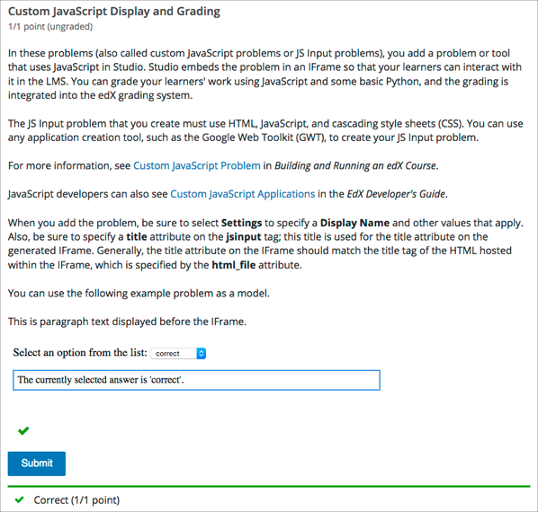

10.9. Custom JavaScript Display and Grading Problem#
Note
EdX offers full support for this problem type.
Custom JavaScript display and grading problems (also called custom JavaScript problems or JS input problems) allow you to create a custom problem or tool that uses JavaScript and then add the problem or tool directly into Studio. When you create a JS input problem, Studio embeds the problem in an inline frame (an HTML iframe element) so that your learners can interact with it in the LMS. You can grade your learners’ work using JavaScript and some basic Python, and the grading is integrated into the edX grading system.
The JS input problem that you create must use HTML, JavaScript, and cascading style sheets (CSS). You can use any application creation tool, such as the Google Web Toolkit (GWT), to create your JS input problem.
Caution
You cannot use a custom JavaScript problem in a component that contains more than one problem. Each custom JavaScript problem must be in its own component. See Including Multiple Questions in One Component for more information.
The Show Answer button does not work for JS input problems. By default, the Show Answer option is set to Never. If you change this option in the problem component, a Show Answer button appears in the learner’s view of the problem in the LMS, but the button does not work.
10.9.1. Create a Custom JavaScript Display and Grading Problem#
Create your JavaScript application, and then upload all files associated with that application to the Files & Uploads page.
In the unit where you want to create the problem, under Add New Component select Problem.
In the problem editor, select Advanced problem types. Then select Custom JavaScript Display and Grading.
In the advanced problem editor, modify the example code according to your problem. Be sure to specify a
titleattribute on thejsinputtag. This title is used for the title attribute on the generated inline frame.(Optional) To add a Save button to your problem, in the settings panels on the right side of the editor, set Attempts to a number larger than zero.
Select Save.
Note
All problems include more than one resource. If all the resources in
a problem have the same protocol, host, and port, then the problem conforms
to the same-origin policy (SOP). For example, the resources
http://store.company.com:81/subdirectory_1/JSInputElement.html and
http://store.company.com:81/subdirectory_2/JSInputElement.js have the
same protocol (http), host (store.company.com), and port (81).
If any resources in your problem use a different protocol, host, or port,
you need to bypass the SOP. For example,
https://info.company.com/JSInputElement2.html uses a different
protocol, host, and port from
http://store.company.com:81/subdirectory_1/JSInputElement.html.
To bypass the SOP, change sop="true" to sop="false". In the example
problem code, this attribute is just before the closing customresponse
tag.
If you bypass the same-origin policy, you require an additional file.
The example problem uses the file jschannel.js to bypass the SOP.
For more information, see the same-origin policy page on the Mozilla Developer Network site or on Wikipedia.
10.9.1.1. JavaScript Input Example Problem Code#
The following code recreates the JavaScript Input problem example shown in the overview. The example problem uses these files.
https://files.edx.org/custom-js-example/jsinput_example.html
https://files.edx.org/custom-js-example/jschannel.js (This file is used only because this example bypasses the SOP, as indicated by the line
sop="false")
<problem>
<customresponse cfn="check_function">
<script type="loncapa/python">
<![CDATA[
import json
def check_function(e, ans):
"""
"response" is a dictionary that contains two keys, "answer" and
""state".
The value of "answer" is the JSON string that "getGrade" returns.
The value of "state" is the JSON string that "getState" returns.
Clicking either "Submit" or "Save" registers the current state.
"""
response = json.loads(ans)
# You can use the value of the answer key to grade:
answer = json.loads(response["answer"])
return answer == "correct"
# Or you can use the value of the state key to grade:
"""
state = json.loads(response["state"])
return state["selectedChoice"] == "correct"
"""
]]>
</script>
<p>This is paragraph text displayed before the iframe.</p>
<jsinput
gradefn="JSInputDemo.getGrade"
get_statefn="JSInputDemo.getState"
set_statefn="JSInputDemo.setState"
initial_state='{"selectedChoice": "incorrect1", "availableChoices":
["incorrect1", "correct", "incorrect2"]}'
width="600"
height="100"
html_file="https://files.edx.org/custom-js-example/jsinput_example.html"
title="Dropdown with Dynamic Text"
sop="false"/>
</customresponse>
</problem>
Note
Keep the following points in mind about this example problem.
The jsinput_example.js file defines three JavaScript functions (JSInputDemo.getGrade, JSInputDemo.getState, and JSInputDemo.setState).
The JavaScript input problem code uses JSInputDemo.getGrade, JSInputDemo.getState, and JSInputDemo.setState to grade, save, or restore a problem. These functions must be global in scope.
JSInputDemo.getState and JSInputDemo.setState are optional. You need to define these functions only if you want to conserve the state of the problem.
Width and height represent the dimensions of the inline frame that holds the application.
The response is graded as correct if the
correctoption is selected in the dropdown control when the user selects Submit.Selecting Submit registers the problem’s current state.
10.9.2. JavaScript Input Problem XML#
JSInput allows problem authors to turn stand-alone HTML files into problems that can be integrated into the edX platform. Since its aim is flexibility, it can be seen as the input and client-side equivalent of CustomResponse.
A JSInput exercise creates an inline frame (iframe) in a static HTML page, and passes the return value of author-specified functions to the enclosing response type (generally CustomResponse). JSInput can also store and retrieve state.
10.9.2.1. Template#
The following is the basic format of a JSInput problem.
<problem>
<script type="loncapa/python">
def all_true(exp, ans): return ans == "hi"
</script>
<customresponse cfn="all_true">
<jsinput gradefn="gradefn"
height="500"
get_statefn="getstate"
set_statefn="setstate"
html_file="/static/jsinput.html"
title="iframe Title"/>
</customresponse>
</problem>
The accepted attributes are:
Attribute Name |
Value Type |
Required |
Default |
|---|---|---|---|
html_file |
URL string |
Yes |
None |
title |
string |
Yes |
|
gradefn |
Function name |
Yes |
|
set_statefn |
Function name |
No |
None |
get_statefn |
Function name |
No |
None |
height |
Integer |
No |
|
width |
Integer |
No |
|
title |
String |
No |
None |
10.9.2.2. Required Attributes#
html_file
The html_file attribute specifies the HTML file that the iframe will point to. The HTML file must be located in the content directory.
The iframe is created using the sandbox attribute. Although pop-ups, scripts, and pointer locks are allowed, the iframe cannot access its parent’s attributes.
The HTML file must contain a gradefn function that the JSInput file can access. To determine whether the gradefn function is accessible, in the console, make sure that gradefn returns the right thing. When JSInput uses the gradefn function, gradefn is called with gradefn.call(obj), where obj is the object-part of gradefn. For example, if gradefn is myprog.myfn, JSInput calls myprog.myfun.call(myprog).
The HTML file has no specific requirements other than the gradefn function. Note that inheriting CSS or JavaScript from the parent (except for the Chrome-only seamless attribute, which is set to
Trueby default) is not currently supported.title
The title attribute specifies the title for the generated iframe. Generally, the title attribute on the iframe should match the title tag of the HTML file that is hosted within the iframe.
gradefn
The gradefn attribute specifies the name of the function that will be called when a user selects Submit, and that returns the learner’s answer. Unless both the get_statefn and set_statefn attributes are also used, this answer is passed as a string to the enclosing response type. In the customresponse example above, this means cfn will be passed this answer as
ans.If the gradefn function throws an exception when a learner attempts to submit a problem, the submission is aborted, and the learner receives a generic alert. The alert can be customized by making the exception name
Waitfor Exception; in that case, the alert message will be the exception message.Important
To make sure the learner’s latest answer is passed correctly, make sure that the gradefn function is not asynchronous. Additionally, make sure that the function returns promptly. Currently the learner has no indication that her answer is being calculated or produced.
10.9.2.3. Optional Attributes#
set_statefn
Sometimes a problem author will want information about a learner’s previous answers (“state”) to be saved and reloaded. If the attribute set_statefn is used, the function given as its value will be passed the state as a string argument whenever there is a state, and the learner returns to a problem. The function has the responsibility to then use this state appropriately.
The state that is passed is:
The previous output of gradefn (i.e., the previous answer) if get_statefn is not defined.
The previous output of get_statefn (see below) otherwise.
It is the responsibility of the iframe to do proper verification of the argument that it receives via set_statefn.
get_statefn
Sometimes the state and the answer are quite different. For instance, a problem that involves using a JavaScript program that allows the learner to alter a molecule may grade based on the molecule’s hydrophobicity, but from the hydrophobicity it might be incapable of restoring the state. In that case, a separate state may be stored and loaded by set_statefn. Note that if get_statefn is defined, the answer (i.e., what is passed to the enclosing response type) will be a json string with the following format:
{ answer: `[answer string]` state: `[state string]` }The enclosing response type must then parse this as json.
height and width
The height and width attributes are straightforward: they specify the height and width of the iframe. Both are limited by the enclosing DOM elements, so for instance there is an implicit max-width of around 900.
In the future, JSInput may attempt to make these dimensions match the HTML file’s dimensions (up to the aforementioned limits), but currently it defaults to
300and400for height and width, respectively.